ça commençait à me gaver de devoir poster une par une mes musiques sur youtube ou soundcloud tout ça pour les
modifier 5 jours après,
alors je centralise tout sur un beau site tout mignon tout plein, et ça me permettra d'ailleurs de poster
d'autres trucs au pif qui intéressent personne
Sommaire :
Musiques :
Audiothèque (depuis 2020)
pour une meilleur expérience, je recommande de commencer par "SkyWave" "Version 2" et "2000" (c'est celles que
je préfère)
je recommande également d'utiliser un casque
attention: certaines musiques ne s'arrêteront pas au démarrage d'une nouvelle, je sais pas pourquoi
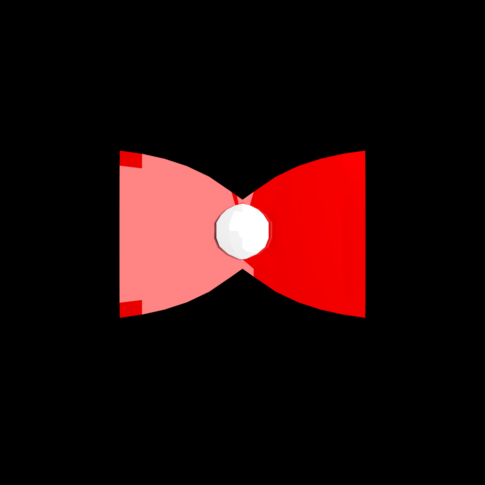
Les trucs
00:00 / ??:??
la première musique à peu près correct que j'ai conçu, très vieille dans la forme
certe, (je l'aime pas trop en vrai)
00:00 / ??:??
truc 3 est l'une des musiques ayant reçu le plus d'amour que je pouvais donner à un
projet, elle a été rallongé de moitié suite à la demande de joker, rien que ça
00:00 / ??:??
aucune description
00:00 / ??:??
c'est un remake d'une musique de Need For Speed The Run (Scrappy Rubber)
00:00 / ??:??
aucune description
00:00 / ??:??
aucune description
00:00 / ??:??
la musique préféré d'un daron qui a écouté les musiques que j'ai envoyé à une pote
00:00 / ??:??
c'est un remake d'une musique de FNAF (Midnight Motorist)
Spécial humide
00:00 / ??:??
elle en dégoûte plus d'un
00:00 / ??:??
aucune description
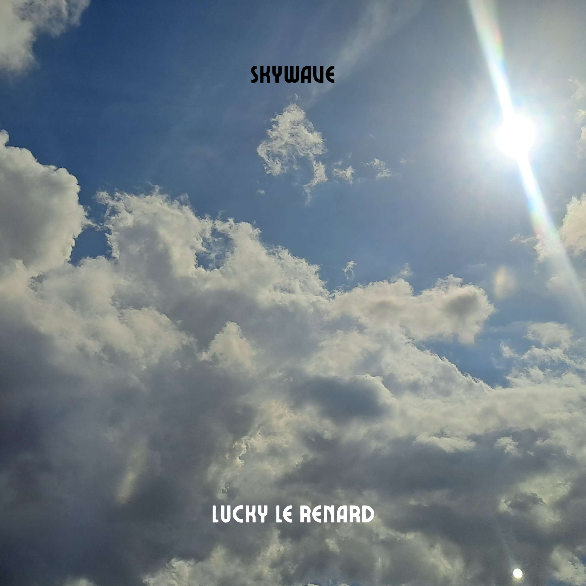
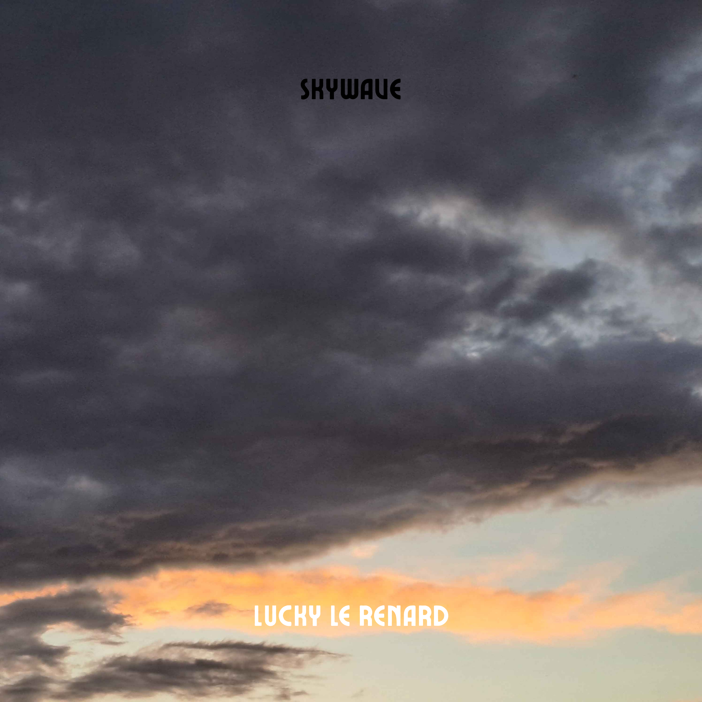
SkyWave
00:00 / ??:??
aucune description
00:00 / ??:??
une de mes musiques préférées
00:00 / ??:??
aucune description
Version 2
00:00 / ??:??
aucune description
00:00 / ??:??
j'ai dupliqué la piste avec une basse en + sinon elle est trop courte
00:00 / ??:??
remake composé avec les instruments de super mario 64
illusion
00:00 / ??:??
aucune description
00:00 / ??:??
aucune description
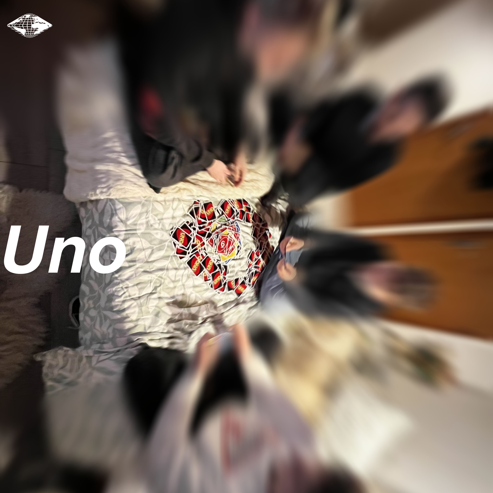
Uno
00:00 / ??:??
aucune description
00:00 / ??:??
aucune description
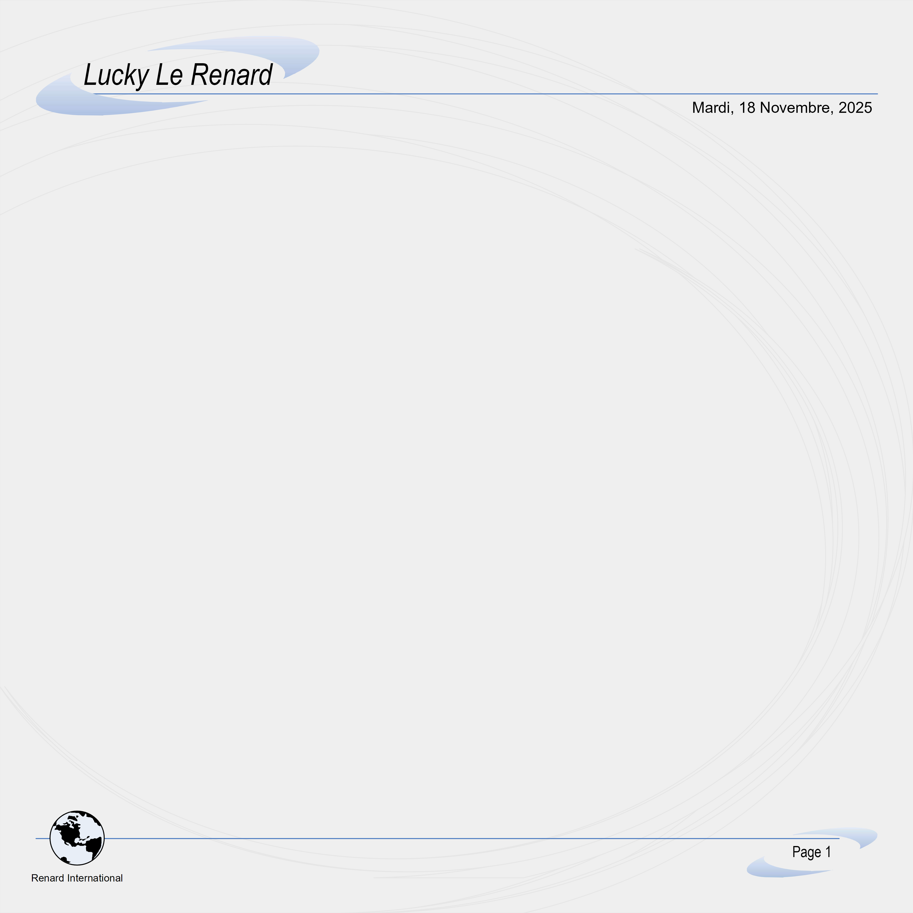
2000
00:00 / ??:??
aucune description
00:00 / ??:??
ma musique la plus thématique, et une de mes préférée
00:00 / ??:??
remake de SkyVibe, je trouve qu'elle rajoute une profondeur en + par rapport à l'original
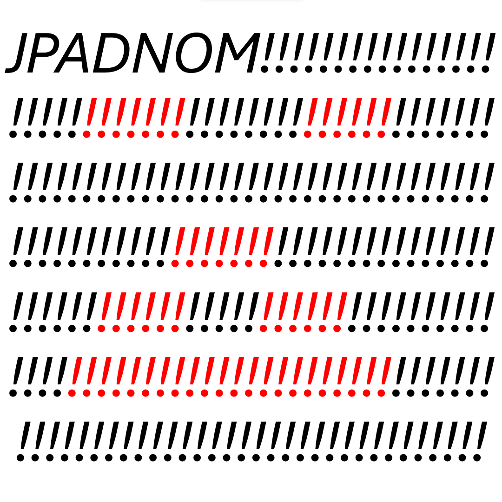
Musiques pour jeux
00:00 / ??:??
était présent dans JPADNOM, a été retiré (pov sur la minia c'est mal écrit ptdr)
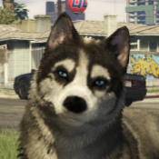
Unishall
00:00 / ??:??
aucune description
00:00 / ??:??
en partenariat avec damsfr
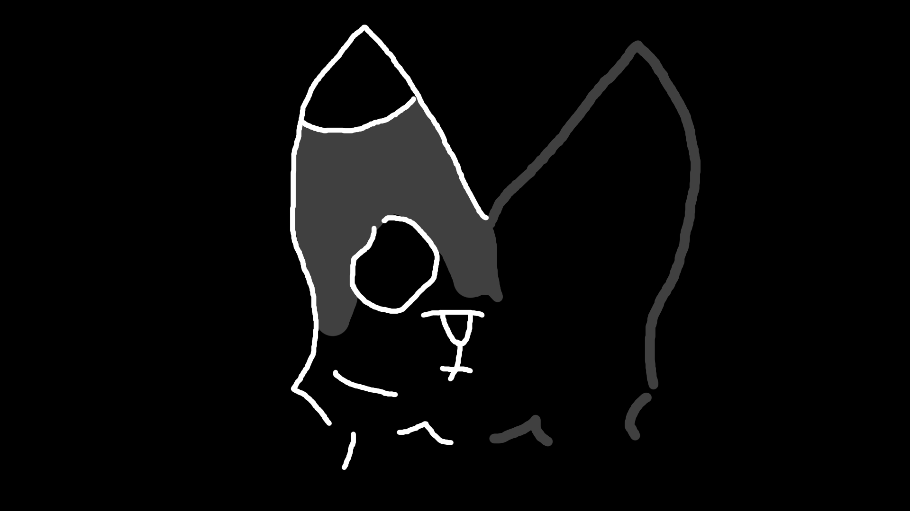
JoJo Halloween Remake
00:00 / ??:??
aucune description
00:00 / ??:??
aucune description
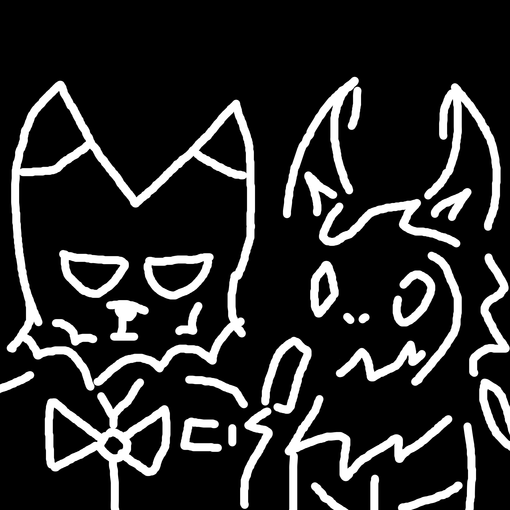
Autres
00:00 / ??:??
je saurai pas dire de quand elle date
00:00 / ??:??
c'est un remake de "The Dirty Side Of The Street"
00:00 / ??:??
aucune description
00:00 / ??:??
aucune description
Cours de musique
à la base je voulais en faire une vidéo mais ça demandait tellement de préparation que ça m'a vite gavé et au final je le fais ici, c'est tout aussi pratique
Partie 1: Découverte
je vais expliquer pas à pas comment fonctionne le logiciel (parce que j'en connais qui me l'ont gentillement demandé)
je fais toutes mes musiques sur Soundtrap, c'est gratuit, on manque la plupart du temps d'instruments divers
(cuivre, cordes frottées etc) mais il est relativement puissant quand on sait improviser
la seule chose que ça demande c'est de créer un compte, d'entrer un faux prénom parce que tout le monde s'en
fout et de créer un projet sur la page d'acceuil
ensuite sélectionnez "musique" dans l'onglet qui apparaît devant-vous, et vous tomberez sur cette interface
digne des pires cauchemars que vous puissiez imaginez
sérieusement c'est qui qui se dit que c'est une bonne idée de mettre du gris en couleur sombre au lieu du noir
je vais péter mon crâne
bref, on va voir étape par étape de quoi est constitué cette page en commançant par ajouter un instrument (faite
pas attention aux boutons au milieu de l'interface)
"ajouter une nouvelle piste"
en haut à gauche ouvrira une fenêtre demandant qu'est ce que vous voulez ajouter,
si vous avez un instrument irl branché comme un micro, sélectionnez "voice & mic" ou "guitar/bass amp" (le
deuxième possède des effets de micro intégré, comme une ampli)
pour les autres (et de toute façon le tuto a été prévu que pour vous), sélectionnez "keys" on verra plus tard
qu'on s'en cogne un peu de ce qu'on peut sélectionner ici en fait
woaw !!!!!!!!!!!!!!!!!!!!!!!!!!!!
un nouvel instrument est apparu dans la bande à gauche, c'est le piano par défaut, et vous pouvez répéter
l'opération autant de fois que vous le souhaitez
vous pouvez déjà commencer à jouer des sons sur le clavier mais ça sonnera vraiment pas bien je pense étant
donné que vous êtes encore là à lire ces lignes alors passons
maintenant pour changer l'instrument c'est basique, sélectionnez le nom de l'instrument (au mileu à gauche des
potentiomètres) dans l'arrangeur
(je l'appelle comme ça mais je sais pas comment ça se nomme faites-moi confiance)
à partir de là vous avez un choix assez vaste d'instrument (ceux qui sont gratuit je parle)
et je recommande de vous perdre dans ce panneau pour sélectionnez celui qui semble vous donner de l'inspi avant
de continuer
Partie 2: Composer
en survolant la piste que vous venez de créer, le logiciel vous proposera automatiquement de créer une section
de note (vide)
confirmer et vous verrez un joli carré de couleur (ici en rouge) apparître sous vos yeux
plus important encore l'onglet de l'arrangeur (en bas) aura changé, il est en mode "piano roll" (c'est pas
traduit je sais)
avant de faire quoi que ce soit je vous en conjure tout en bas vous avez un bouton avec une souris, vous le
sélectionnez
c'est le mode de création des notes, et je vous assure que vous avez pas envie de jouer avec l'autre mode (c'est
le mode pour "dessiner" des notes et ça pue de fou)
(au cas où vous arrivez pas à appuyer dessus)
appuyez juste sur tab
ok bon tout est à peu près en place, mais il faut pouvoir se déplacer dans ce foutoir:
contrôles:
molette: monter en gamme (vers le haut ou le bas) (uniquement dans le piano roll)
ctrl + molette: zoomer
flèches directionnelles: gauche/droite
sélection de la balise violette avec la souris: gauche/droite
en dernier il y a la gestion de la section,
vous pouvez l'étirer pour la rallonger, ou la répéter (sélection de sa flèche bouclée dans le coin en haut à
droite)
ses notes seront dupliqué automatiquement c'est giga pratique
vous pouvez même lui appliquer un effet de fondu en sélectionnant ses points sur les côtés
Partie 3: Quantification
avant de commencer à créer, il faut déjà comprendre comment le faire
un rythme, je pense pas avoir à vous expliquer c'est quoi, (dans le doute) ça permet de câler un instrument dans le temps,
ce qui sonne un milliard de fois mieux à l'oreille
petit exemple:
00:00 / ??:??
ici, on constate que le son n'est pas câlé dans le temps, et ça créer des décalages
00:00 / ??:??
à l'inverse, cet exemple est parfaitement câlé et sonne mieux, si vous entendez
aucune différence, répétez le son jusqu'à ce que ce soit le cas
histoire d'être sûr de ne pas avoir ce genre de problème à l'avenir, activez l'aimentation (en haut à droite) et
sélectionnez la taille de la grille en 1/16
si vous voulez par la suite un placement précis vous pouvez mettre 1/32 mais à vos risques et périls
le 1/32 est recommandé uniquement quand on veut un tempo rapide et quand on sait ce qu'on fait surtout
Partie 4: Gamme musicale
je suis pas en train de dire que vous devriez faire comme moi, mais je vais expliquer ma façon de composer, si
ça peut être utile
je travaille avec une "suite de note", une "gamme musicale" qui me permet que, quelque soit la note sur laquelle
j'appuie après l'autre, ça sonnera bien
la "base" se compose comme ça:
fa, sol♯, la♯, do, ré♯, et on retourne au point de départ à l'octave supérieur, fa
00:00 / ??:??
sur l'exemple si dessus, j'ai aussi décalé la gamme +2 (donc le fa de départ attérit
sur le sol) et ensuite -1 (le fa commence sur le mi)
note: la gamme peut être complexifié (comme par exemple en rajoutant la note
si juste avant le do) mais avec certaines limites
la version complexifié au maximum avant que ça commence à sonner étrange (de mon point de vue)
c'est une base qui j'ai acquis inconcsiemment à cause des premières musiques que j'ai appris au piano, Stardust
Crusader et Diamon is Unbreakable
ces 2 musiques se basent sur les 2 mêmes suites de notes, que j'ai rapidement retenu
00:00 / ??:??
on peut noter que quelle que soit l'ordre des notes, ça sonne bien
note: la version complexifié ne permet pas le jeu 100% aléatoire, essayez par vous-même
trucs à pas faire, jouer un ton (0) avec un ton (+6) en même temps
ou un ton (0) avec le ton juste au dessus (lorsque que c'est la même octave)
un ton (0) avec un ton (+6)
maintenant que vous avez ça en tête et que vous pouvez arrêter de vous soucier de où placer vos notes, il vous
reste plus qu'à tenter des trucs
prendre l'habitude de la gamme musicale ça vient avec le temps, et en pratiquant, si vous avez pas de piano chez vous, c'est dommage pour vous
Partie 5: Batterie
pour cette partie il va falloir suivre
commencez par créer une piste et sélectionnez la batterie, puis pattern beatmaker
vous avez 2 types de batterie, l'acoustique et l'électronique
sur l'acoustique vous avez: grosse caisse, caisse clair, tom basse, tom médium, tom alto, symbale crash et ride,
et charlet
sur l'électronique, tout ça, ça varie et des fois vous avez des composants en +, ou en -
pour pas perdre tout le monde on va rester sur l'acoustique
en revanche la batterie sélectionné par défaut c'est "tasty" (une électronique) changez l'instrument comme on a
vu avant et cherchez "clean black"
vous pouvez constater que le logiciel vous amène dans l'onglet "pattern" barrez-vous de ce menu et allez dans
"piano roll" (comme sur les instruments)
parce que composer dans ce menu augmente la vélocité des notes au maximum (127) et c'est horrible à gérer
je vais vous faire un exemple de ligne de batterie simple
créez une piste pour la batterie dans la bande et rallongez-là pour qu'elle atteigne du temps 1 au temps 3 (la
section fait désormais 2 beats de long)
à partir de là on peut voir comment faire une ligne de batterie
cherchez la note "c1" (do) dans le piano roll et placez une note qui fait 1 quart de temps (ce sera la grosse
caisse)
ensuite copiez-collez là histoire que toute la section soit pleine
faites la même chose pour le mi mais décalez la de 1 temps et rallongez là pour la copier plus facilement sur 2
quarts de temps (ce sera la caisse claire)
pareil pour la note fa# mais en doublant le temps de la grosse caisse
00:00 / ??:??
et comme on peut le voir, tout ça c'est qu'une histoire de rythme, que vous faites quelque chose de bien lisse
comme ici ou faites un truc au pif, tant que c'est en rythme, ça sonnera bien
00:00 / ??:??
retenez que c'est pareil avec un instrument, tant que c'est en rythme, pas de panique
à partir de là j'imagine que vous avez toutes les clés en mains pour faire un son, et je suppose que j'ai pas
besoin d'expliquer + que ça
Partie 6: Effets
les effets sont extrêmement pratique, ils permettent non seulement de jouer avec les limites de
l'instrument mais aussi de paufiner les moindres réglages de sonorité, dans les moindres détails
pour commencer, accéder à l'onglet des effets que vous avez vu à côté de piano roll, ensuite appuyez sur son
bouton respectif en haut à gauche "fx", ou dans l'onglet pour ouvrir le panneau des effets
les effets sont répartis en 6 couleurs :
la distortion (guitare, basse, etc) (en violet)
le stéréo (en rose)
la réverbération (et assimilé) (en bleu)
la compression de volume (en jaune)
les filtres et modification de volume (en vert)
l'amplification (guitare, basse, etc) (en fushia)
je m'amuserai pas à décrire chaque effet un par un, ce serait inutile, le meilleur moyen de les comprendre c'est de s'en servir
et j'ai la flemme de continuer ça y est c'est des effets quoi faut juste les ajouter et les bidouiller
pour certains instruments qui sont par défaut en sortie audio mono (ce qui est dégeulasse) je recommande le "stereo chorus" qui rajoute de la profondeur
Partie 7: Divers
le tempo et la signature temporelle sont en bas à gauche du logiciel
vous pouvez inviter quelqu'un pour travailler avec vous sur une musique, sur le bouton "inviter" en haut à
droite"
vous pouvez rajouter des instruments normalement payants à partir de la bibliothèque de boucle (le premier bouton faisant parti de la liste avec "fx"), ils portent ces noms:
par exemple, prism - key chords c'est le piano rétro, rythmic - level c'est un piano payant, et vagabond piano - airy grand c'est pareil
(fin)
Art
note : j'ai dû m'aider de chagpt pour certaines interprétations, dû à la complexité sur laquelle moi même je tombe en écrivant ce texte
Rappel :
selon le point de vue, c'est quoi une image "belle" ou "réaliste" ?
selon moi en tout cas (et ça facilitera la compréhension plus tard) une image, un rendu "beau" est un rendu réaliste, qui donne l'illusion qu'il est réel
pour certains, un rendu "beau" est purement est simplement beau à l'oeil, qu'il soit réaliste ou pas
subjectivement, je vois aucun intérêt à ça
j'ai toujours été un peu fasciné par la création d'expérience immersive, transmettre des émotions très particulières à travers
des couleurs, des environnements, des sons, ou de la musique
tout ça m'a rapidement amené à créer des jeux, en particulier sur roblox
car un jeu rassemble tout les éléments décrits précédemment, ce qui permet de créer également décrit au dessus, une expérience immersive
fabriquer une expérience sensorielle cohérente est la meilleure chose que je puisse faire de mon temps libre
je vais décrire ici les différents éléments auquels j'y trouve de l'intérêt, et pourquoi,
typographie
l'éntièreté du site est en "Helvetica World Bold Italic" c'est pas dû au hasard,
j'apprécie pour commencer les polices adaptés à l'usage italique, car il donne du mouvement constant et linéaire à n'importe quel message
"Helvetica World" (ou "Helvetica Neue (..) 77") est aussi une police très caractériel, étant donné que cette dernière possède une forme plus "carrée" et encore moins émotive,
elle donne un ton froid, sec, mais intégré à l'italique, elle donne une surcouche de mouvement "figé"
elle est normalement utilisé dans l'industrie, ou pour indiquer une fonction claire, sans être "design" ou être jolie à lire
ce "manque de design" je lui trouve une utilité frappante dans sa façon d'être interprété, là où on veut mettre un fond de tension invisible, même en lisant à travers les lignes
c'est une forme vide qui suggère une face cachée, la sincérité crue qui permet la neutralité parfaite avec une faille subtile : ce mouvement vers la droite
cette police fait partie d'un style où je ne cherche pas la compréhension, mais la résonance qu'il peut créer, là où certains veulent guider leurs émotions, moi je les perds
j'ai fait de mon mieux pour imiter cette police dans JPADNOM, jeu qui possède aussi des couleurs très particulière
Colorimétrie
j'avais récemment joué à Richard Burn Rally sur ps2, j'ai été impressionné de voir la gestion des couleurs que le jeu pouvait donner
vous pourrez simplement aller regarder des photos du jeu de n'importe quel endroit, vous verrez aussi que le jeu est, beau ?
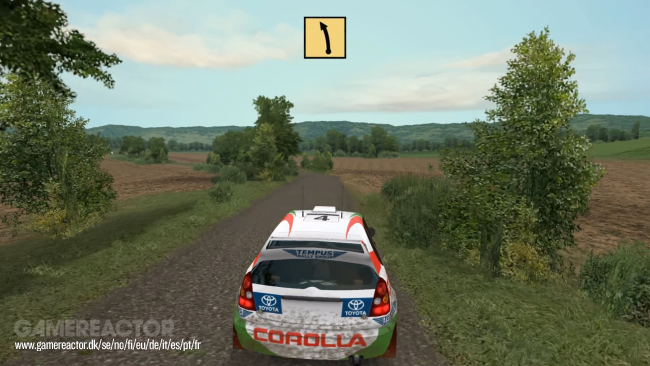
sur une capture d'écran dans cette route de campagne, aucune couleur ne déborde, rien ne fait tâche, tout est fade, et pour moi c'est ça qui rend un jeu beau
la qualité graphique c'est une chose, mais quand vous avez un minimum de qi et le bon choix des couleurs,
vous vous rendez compte que vous avez vraiment pas besoin d'avoir un rendu en 4k ou du ray-tracing pour avoir un jeu qui rend bien
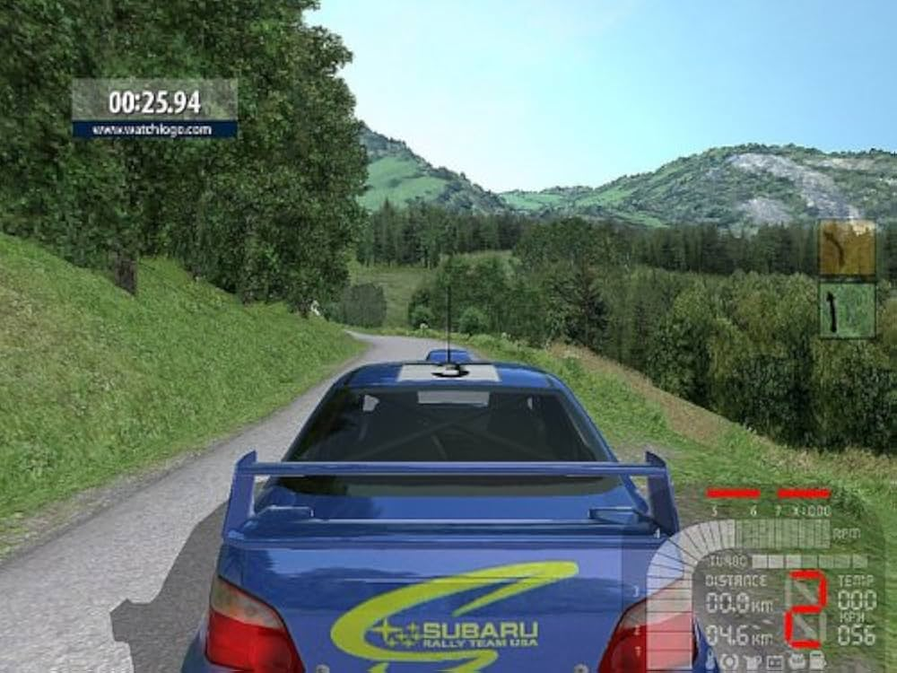
Palettes de couleurs
La palette de couleur est un élément clé pour identifier un élement des autres, ou pour se démarquer sans même le dire
J'ai quelques palettes "à moi" (j'ai jamais vu personne s'en servir) qui me plaisent beaucoup
vert de service est une palette typé "signalétique" / de service, d'où son nom
le blanc est la couleur principale, elle pose la base de la neutralité, elle est froide et constante
le vert sert d'appui autoritaire, il précise le matériel, et non la décoration
il évoque le militaire, le forestier, ou l'administration de terrain
la touche rouge + rayure évoque la continuité, l'usage dans le temps et la durabilité
elle est là pour signaler la présence
elle fait époque 70-90, sans évoquer le vintage pour autant


.png)